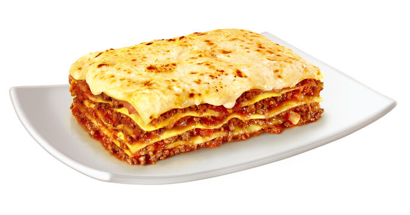

Lasanha a Bolonhesa

Camadas de massa, molho de carne caseiro e queijo gratinado: a lasanha clássica de domingo, que serve a família toda.
Ingredientes
- 500 g de massa para lasanha (pré-cozida)
- 500 g de carne moída
- 1 cebola picada
- 3 dentes de alho picados
- 2 latas de molho de tomate (ou 800 g de tomate pelado)
- 2 colheres de sopa de extrato de tomate
- 1 colher de chá de orégano
- Sal e pimenta-do-reino a gosto
- 400 g de presunto fatiado
- 500 g de queijo muçarela fatiado
- 1 xícara de queijo parmesão ralado
- 2 colheres de sopa de azeite
Etapas:
- Aqueça o azeite numa panela e refogue a cebola até ficar transparente. Junte o alho e mexa por 1 minuto.
- Adicione a carne moída e cozinhe até dourar, soltando com uma colher.
- Acrescente o molho de tomate, o extrato e o orégano. Tempere com sal e pimenta e deixe cozinhar em fogo baixo por 20 minutos.
- Preaqueça o forno a 180 °C.
- Num refratário, espalhe uma camada fina de molho e cubra com folhas de massa.
- Faça camadas na ordem: molho, presunto, muçarela, massa. Repita até acabar os ingredientes, terminando com molho e muçarela.
- Polvilhe o parmesão por cima e cubra com papel-alumínio.
- Asse por 30 minutos, retire o papel-alumínio e deixe mais 15 minutos para gratinar.
- Espere 10 minutos antes de cortar, assim as camadas não desmancham.
Home